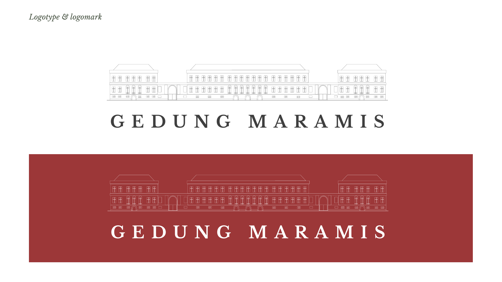

Ringkasan eksekutif
Gedung A.A. Maramis (Istana Daendels, Het Witte Huis, 1809–1828) adalah Bangunan Cagar Budaya Peringkat Nasional, kantor pertama Kementerian Keuangan RI, dan gedung kantor berlanggam imperial pengaruh Prancis terbesar abad ke-19 di Indonesia. Setelah pemugaran 2019–2022, gedung ini diserahkelolakan kepada LMAN pada 31 Juli 2023 dengan mandat Highest and Best Use.
Tiga masalah yang ditemukan
Belum ada kanal dan nama baku
Tidak ada akun, situs, atau pemesanan daring khusus gedung. Lima nama beredar: Gedung A.A. Maramis, A.A Maramis Heritage, GEDUNG AA MARAMIS, GEDUNG MARAMIS, dan Istana Daendels.
Pesan akses saling bertentangan
Media dan kreator menulis "tidak dibuka untuk umum", sementara portal lain menulis "gratis, Senin–Jumat 09.00–15.00".
Lantai 3 nyaris tak terjual
17 ruang berkapasitas 1.620 orang di Lantai 3 Gedung A dan C hampir tidak tercatat dipakai. Yang laku justru ruang bernama Kerajaan Nusantara.
Arah strategis
Gedung A.A. Maramis adalah rumah pertama keuangan negara di jantung Weltevreden: warisan nasional yang dirawat dengan bekerja, tempat negara, kreativitas, dan publik bertemu.
- Satu merek, satu nama, satu kanal. "Gedung A.A. Maramis" sebagai masterbrand dengan endorsement "Dikelola oleh LMAN – Kementerian Keuangan", plus satu pintu pemesanan.
- Tiga lini produk: Maramis Ruang (venue), Maramis Jelajah (tur & edukasi), Maramis Agenda (program budaya).
- Akses publik terjadwal dan dipublikasikan, meniru Paleis op de Dam dan The Fullerton Heritage.
- Nomenklatur ruang berbasis sejarah untuk menghidupkan Lantai 3 dan ruang tanpa nama.
- Kalender momen 2027: Jakarta 500 tahun (22 Juni), MRT Fase 2A Bundaran HI–Monas (akhir 2027), Hari Oeang ke-81 (30 Oktober).
Target hingga akhir 2027
| Indikator | Kondisi awal | Target 2027 |
|---|---|---|
| Hari terisi | 41,8% | ≥55% |
| Porsi kegiatan komersial & kreatif | 15% | ≥25% |
| Kegiatan di Lantai 3 (A & C) | ±1 | ≥24 per tahun |
| Sesi tur milik pengelola | 0 | ≥48 per tahun |
| Kanal resmi | Belum ada | Aktif, basis audiens terukur |
Latar belakang & konteks objek
Profil
| Nama historis | Istana Daendels, Paleis Weltevreden, Het Groote Huis, Het Witte Huis (Gedung Putih) |
| Alamat | Jl. Lapangan Banteng Timur No. 2–4, Pasar Baru, Sawah Besar, Jakarta Pusat 10710 |
| Blok | Gedung A (fasad utama), B (sayap barat), C (blok utama dalam), D (sayap timur), E (pendukung) |
| Inventaris sewa | 49 unit: 15 ruang Lantai 1 Gedung C (paket Rp125 juta/hari) dan 34 ruang satuan (Rp3,44–30,30 juta/hari) |
| Pengelola | BMN Kementerian Keuangan, dikelola LMAN (BLU) sejak 31 Juli 2023 |
| Penghargaan | FIABCI World Prix d'Excellence 2025, Silver (Heritage) |
Empat lapis makna
Gedung dan Lapangan Banteng (Paradeplaats/Waterlooplein) menandai perpindahan pusat Batavia dari muara Ciliwung ke Weltevreden.
Rancangan Lt. Kol. J.C. Schultze dan J. Jongkind, diselesaikan era Du Bus de Gisignies (1826–1828). Langgam imperial Prancis terbesar di Indonesia.
Rumah Generale Directie van Financiën, Algemeene Rekenkamer, dan 's Lands Drukkerij; lalu kantor pertama Kemenkeu RI.
Lapangan di mukanya dinamai "Banteng" oleh Sukarno. Bangunan kolonial telah "diindonesiakan" menjadi rumah keuangan republik.
Landasan regulasi yang membentuk komunikasi
| Ketentuan | Isi | Implikasi |
|---|---|---|
| UU 11/2010 Ps. 79(5) | Hasil penelitian wajib dipublikasikan kepada masyarakat | Dasar hukum pilar konten edukasi |
| UU 11/2010 Ps. 83 | Adaptasi wajib mempertahankan ciri asli dan fasad | Batas desain signage dan dekorasi acara |
| UU 11/2010 Ps. 85 | Pemanfaatan untuk pendidikan, kebudayaan, pariwisata, dan lainnya | Legitimasi seluruh lini produk |
| UU 11/2010 Ps. 86 & 88 | Kajian sebelum pemanfaatan berisiko; pemulihan atas biaya pemanfaat | Klausul kontrak dan Piagam Etiket Acara |
| UU 11/2010 Ps. 92 | Dokumentasi komersial wajib seizin pengelola | Izin foto/film berbayar sebagai pendapatan dan kontrol merek |
| UU 11/2010 Ps. 93 | Penggandaan cagar budaya nasional perlu izin | Merchandise berbasis motif, bukan replika |
| PMK 144/PMK.06/2020 | Sewa guna aset kelolaan LMAN berbasis nilai wajar oleh Penilai | Dasar menjelaskan tarif secara transparan |
| Inpres 9/2015; Perpres 96/2025 | Narasi tunggal dan Badan Komunikasi Pemerintah | Koordinasi dengan Biro KLI dan Bakom |
Penetapan cagar budaya: PM.13/PW.007/MKP/05. Buku Kemenkeu (2022) menyebutnya SK Mendikbud, sementara JDIH mencatat Permen Menbudpar 2005. Perlu verifikasi
Tiga fungsi, satu gedung
| Fungsi | Prioritas | Bentuk | Peran komunikasi |
|---|---|---|---|
| Ruang Negara | 1 · hak prioritas protokol | Seremoni, jamuan kenegaraan, rapat pimpinan, tamu negara | Prestise dan earned media nasional/internasional |
| Ruang Karya | 2 · pendapatan | MICE, gala, peluncuran produk, fashion show, film, pameran, festival | Membiayai pelestarian; menjangkau segmen gaya hidup |
| Ruang Publik | 3 · legitimasi, terjadwal | Tur reguler, Hari Terbuka, edukasi, program komunitas | Menjawab Pasal 79 dan mencegah kritik eksklusivitas |
Analisis situasi & lingkungan strategis
Pemanfaatan gedung dalam angka
Kegiatan inti per bulan
Tanpa sesi loading · Sep 2025 – Des 2026 · 133 kegiatan
Siapa yang memakai gedung
Kegiatan inti per kelompok penyelenggara (n=133)
Kapasitas vs pemakaian per lantai
Kegiatan inti dengan lantai teridentifikasi
- Puncak Okt–Nov 2025 datang tepat setelah Open House (30 Sep 2025): momen publikasi mendorong permintaan.
- Maret 2026 hampir kosong (1 kegiatan), kemungkinan efek Ramadan. Musim sepi perlu program khusus.
- Pipeline Q4-2026 hanya 18 entri dibanding 56 pada Q4-2025. Ini tanda cakrawala pemesanan yang pendek, bukan penurunan permintaan.
- 64% walking tour berlangsung di akhir pekan, sehingga segmen publik mengisi slot yang kosong dari agenda kedinasan. Eat Chat Walk menyumbang 40% tur.
Sumber: 172 entri kalender Teamup; 62% kegiatan tidak mencantumkan lantai. Rincian di data_analysis.md.
SWOT
Kekuatan
- Keunikan tak tergantikan: imperial Prancis terbesar, kantor pertama Kemenkeu, lebih dari 200 tahun
- Klien berulang: 19 penyelenggara menyumbang 69,4% kegiatan
- Bukti prestise: FIABCI 2025, Queen Máxima, jamuan HUT RI, Rose Pandanwangi
- Ruang bernama (Majapahit, Sriwijaya, Bone, Kutai) terbukti laku
- KV sudah tersedia: logotype, motif lengkung, palet lima warna
- Terintegrasi dengan Lapangan Banteng; akan dilayani MRT Fase 2A
Kelemahan
- Tidak ada kanal, situs, dan pemesanan daring
- 43 dari 49 unit hanya berkode; pencatatan kalender tidak baku
- Batasan fisik: larangan memaku/menempel, tangga curam, akses difabel belum dikomunikasikan
- 45 hari loading (17,7% hari-kegiatan)
- Akses publik belum menjadi produk; 40% tur dari satu operator
- Kalender tidak mencatat peserta, nilai transaksi, atau sumber prospek
Peluang
- Jakarta 500 tahun (22 Juni 2027) dan status Kota Global (UU 2/2024)
- MRT Fase 2A; MoU LMAN–MRT ditandatangani di gedung ini (17 Des 2025)
- Pengunjung museum usia 18–24 kini kelompok terbesar di Museum Nasional
- MICE pulih 2026, proyeksi tumbuh hingga 15%; wisman 15,39 juta (2025)
- Ceruk fiscal heritage belum dimiliki siapa pun
- Employee Advocacy Kemenkeu dan program Fiscal Heritage Explorer
Ancaman
- Tuduhan komersialisasi warisan bangsa
- Kerusakan fisik akibat acara (Pasal 88)
- Sensitivitas narasi kolonial: Daendels dan kerja paksa Jalan Raya Pos
- Narasi lama "gedung berhantu"
- Efisiensi anggaran pemerintah (Inpres 1/2025) pada segmen 57%
- Kompetisi: GKJ, Museum Nasional, Arsip Nasional, Tugu Kunstkring, Pos Bloc, ballroom hotel
Sentimen publik & pemantauan media
| Tema | Arah | Bukti | Implikasi |
|---|---|---|---|
| Kemegahan & estetika | Sangat positif | "Estetik dan Instagramable" (Kumparan, 2023); "megah", "expensive vibes" (Kompas, 2026) | Aset utama konten visual |
| Prestise kenegaraan | Positif | Kunjungan Presiden (2022), FIABCI 2025, Queen Máxima, HUT RI 2026 | Konten di balik layar, tata kelola terbuka |
| Ruang publik kota | Tumbuh | Integrasi Lapangan Banteng, JICC, Pesta Kreasi Kota, Lebaran Betawi | Narasi dimotori Pemprov DKI; LMAN perlu ikut memilikinya |
| Akses terbatas | Friksi | "Tidak dibuka untuk umum" (Kompas 2024 & 2026; TikTok); perlu izin kelompok | Isu prioritas: produk akses dan satu sumber informasi |
| Informasi akses kontradiktif | Negatif laten | GNFI & Kumparan: "gratis, Senin–Jumat" vs pengalaman lapangan | Koreksi via situs, Google, media brief |
| Warisan mistik | Memudar | "Berhantu" (2018); "Dulu Mistik, Kini Estetik" (2023) | Bingkai ulang seperti Lawang Sewu |
| Komersialisasi / kolonialisme | Belum muncul | Tidak ditemukan kritik terbuka | Risiko laten; siapkan holding statement |
Liputan didominasi earned media dari momen kenegaraan dan acara pihak ketiga. LMAN jarang disebut sebagai pengelola. Metrik pengikut dan ulasan Google Maps belum dapat diakses, sehingga baseline social listening formal dijadwalkan pada Fase 1.
Benchmarking
| Kasus | Model | Hasil | Pelajaran bagi Maramis |
|---|---|---|---|
| Pos Bloc / M Bloc Jakarta | Aset BUMN, operator placemaker swasta, bagi hasil tenant | ±2 juta kunjungan/tahun (M Bloc) | Mitra menghidupkan ruang dengan cepat, tetapi cerita gedung harus dijaga pemilik |
| Kota Tua Jakarta | Konsorsium, JV, lalu satgas | 2,41 juta pengunjung (2025) | Tata kelola kabur memperlambat: satu kustodian, satu merek, satu pintu |
| Lawang Sewu Semarang | Anak usaha KAI | 620.550 pengunjung (2025) | Citra "angker" berhasil diubah lewat tur bertingkat dan TikTok aktif |
| Museum Bank Indonesia Jakarta | Museum institusi | ±100 ribu/tahun | Maramis memiliki cerita fiskal; bangun "Jalur Keuangan Negara" |
| National Gallery Singapura | Lembaga nasional di dua monumen | 2,28 juta pengunjung; sewa S$5,27 juta | Sewa venue signifikan tanpa mengaburkan misi; tawarkan add-on tur |
| The Fullerton Heritage Singapura | Swasta, monumen nasional ke-71 | Merek presinct tujuh aset | Tur gratis terjadwal dan galeri kecil membangun legitimasi |
| Paleis op de Dam Amsterdam | Aset negara (padanan LMAN) | Buka 230+ hari/tahun | Fungsi negara prioritas; kalender buka publik diterbitkan enam bulan ke depan |
Tujuan komunikasi
Horizon Okt 2026 – Des 2027. Target adalah usulan dan dikalibrasi setelah baseline formal di Fase 1.
| Ranah | Tujuan | Baseline | Target 2027 |
|---|---|---|---|
| Kognitif | Konsistensi nama "Gedung A.A. Maramis" di kanal resmi | 5 varian | ≥90% konsisten |
| Kesadaran bahwa gedung ini kantor pertama Kemenkeu dan cagar budaya nasional | Belum diukur | ≥40% responden | |
| Informasi akses yang salah di 10 portal teratas | Ada | 0 | |
| Artikel yang menyebut kanal atau pengelola resmi | Rendah | ≥50% | |
| Afektif | Sentimen positif + netral | – | ≥85% |
| Kepuasan tur | – | ≥4,5/5 | |
| Komunitas atau kampus menjadi mitra resmi | 0 | ≥5 | |
| Unggahan advokasi pegawai Kemenkeu | – | ≥1.000/tahun | |
| Konatif | Hari terisi | 41,8% | ≥55% |
| Porsi kegiatan komersial & kreatif | 15% | ≥25% | |
| Kegiatan di Lantai 3 | ±1 | ≥24/tahun | |
| Sesi / peserta Maramis Jelajah | 0 | ≥48 / ≥2.500 | |
| Kegiatan di bulan tersepi | 1 | ≥6 | |
| Prospek via kanal resmi / konversi | Tak tercatat | ≥30/bulan / ≥25% | |
| Insiden kerusakan material | Tak tercatat | 0 |
Pemangku kepentingan
Jaga kepuasan
- Kementerian Kebudayaan & TACB Nasional
- Bakom RI / Komdigi
- BPK & Inspektorat
- Media nasional tier-1
Kelola erat
- Menkeu & Pimpinan Kemenkeu
- DJKN (pembina LMAN, klien terbesar)
- Biro Umum & Biro KLI Kemenkeu
- Pemprov DKI: Gubernur, Disparekraf, Disbud/TSP
- PT MRT Jakarta
- Klien jangkar: Kemenko Perekonomian, OJK, BI, LPEI
Pantau
- Warga sekitar & pedagang Pasar Baru
- Wisatawan umum
- Venue pesaing
Informasikan & libatkan
- Komunitas tur: ECW, JGG, WKJ, Jejak Historia, AKARA, Girls Go Walk
- Akademisi & arsitek: PDA, IAI, kampus
- EO, brand gaya hidup, rumah produksi
- Kreator konten, pelajar & generasi muda
Kebutuhan informasi per segmen
| Segmen | Kebutuhan utama | Format | Frekuensi |
|---|---|---|---|
| Pimpinan Kemenkeu & DJKN | Kinerja pemanfaatan, pendapatan, isu reputasi | Dasbor satu halaman | Bulanan, triwulanan |
| Kemenbud / TACB / Disbud | Kegiatan berisiko, adaptasi, signage, kondisi fisik | Laporan pelestarian, pengajuan izin | Per kegiatan, semesteran |
| Pemprov DKI | Kalender acara publik, Lapangan Banteng, Jakarta 500 | Rapat koordinasi, kalender bersama | Bulanan |
| Klien & EO | Katalog, tarif, ketersediaan, aturan teknis, vendor | Situs, e-brosur, technical rider, site visit | Sesuai permintaan |
| Komunitas heritage | Jadwal slot, narasi resmi, aturan kunjungan | Kit mitra, grup koordinasi | Bulanan |
| Publik umum | Cara berkunjung, jadwal tur, acara, sejarah | Situs, media sosial, Google Business Profile | Mingguan |
| Media | Fakta resmi, foto, narasumber, izin liputan | Ruang pers daring, press kit | Per momen |
| ASN Kemenkeu | Konten siap-bagi, agenda, cara menggunakan gedung | Konten advokasi, intranet | Dua mingguan |
Positioning, arsitektur merek & pesan
Positioning statement
Bagi lembaga negara, korporasi, pelaku kreatif, dan publik yang mencari ruang dengan makna, Gedung A.A. Maramis adalah rumah pertama keuangan negara di jantung Weltevreden: satu-satunya istana berlanggam imperial abad ke-19 di Indonesia yang kini menjadi ruang negara, ruang karya, dan ruang publik, karena setiap kegiatan di dalamnya ikut merawat warisan yang telah bekerja untuk republik sejak hari pertamanya.
Kepribadian merek: anggun (bukan mewah), terpercaya (Kredibel, Optimal, Kontributif), terbuka (bukan eksklusif), bercerita (bukan menggurui).
Arsitektur merek
| Aspek | Standar yang diusulkan |
|---|---|
| Nama dalam teks | Gedung A.A. Maramis, dengan titik sesuai nama Mr. A.A. Maramis. "A.A Maramis Heritage" dihentikan. "Istana Daendels" hanya sebagai konteks sejarah. |
| Logotype | KV memuat dua versi: "GEDUNG MARAMIS" (logotype) dan "GEDUNG AA MARAMIS" (sampul). Rekomendasi: GEDUNG A.A. MARAMIS, agar penghormatan kepada tokohnya tetap utuh. Perlu keputusan |
| Handle digital | @gedungaamaramis; domain gedungaamaramis.id atau subdomain lman.kemenkeu.go.id |
| Tagar | #GedungAAMaramis · #WarisanyangBekerja · #RumahPertamaKeuanganNegara |
Nomenklatur ruang
Ruang bernama lebih mudah dijual dan diingat. Usulan tiga tema dari sejarah gedung; kode tetap dipakai untuk operasional dengan format Nama (Kode) – Gedung/Lantai.
| Area | Tema | Contoh (usulan, perlu kajian & persetujuan) |
|---|---|---|
| Gedung C Lt 2 | Kerajaan Nusantara (sudah ada) | Tetap; beri nama C2.7, C2.8, C2.9 (misalnya Samudra Pasai, Demak, Gowa) |
| Gedung C Lt 3 | Tokoh Keuangan Republik | C3.8 (496 m², 340 orang): Balairung Republik; ruang lain: Sjafruddin Prawiranegara, Soerachman, Djuanda |
| Gedung A Lt 2 & 3 | Lembaga bersejarah di gedung ini | Ruang Rekenkamer, Ruang Percetakan Negara, Ruang Sekretariat Negara, Ruang Direksi Keuangan |
| Gedung C Lt 1 | Aula (paket) | Aula Weltevreden; C1.4 sebagai Serambi Utama |
Tiga pilar cerita
Dirawat dengan Bekerja
Pendapatan pemanfaatan kembali untuk pemeliharaan. Bukti: pemugaran 2019–2022 setelah dua dekade upaya, FIABCI 2025, tata tertib mitra. Format: seri Catatan Pemugaran dan laporan pelestarian tahunan.
Rumah bagi Karya Indonesia
Panggung ekonomi kreatif, UMKM, film, seni, musik, dan mitra ruang publik kota. Bukti: JICC (49 tenant), Pesta Kreasi Kota (33 UMKM), Rose Pandanwangi, lelang DJKN.
Ruang yang Bercerita
Setiap ruang punya cerita; acara di sini adalah pengalaman bermakna. Bukti: ruang Kerajaan Nusantara, koridor lengkung, Lapangan Banteng. Format: katalog bernarasi, tur 360°, Maramis Moments.
Pilar lintas: Rumah Pertama Keuangan Negara. Narasi literasi fiskal yang menghubungkan sejarah gedung dengan APBN, pajak, dan kekayaan negara. Khas, tidak dimiliki venue lain, dan selaras dengan Employee Advocacy Kemenkeu.
Pesan kunci per audiens
| Audiens | Pesan kunci |
|---|---|
| Pimpinan Kemenkeu & DJKN | "Gedung A.A. Maramis membuktikan bahwa aset cagar budaya negara dapat produktif, akuntabel, dan membanggakan." |
| Regulator kebudayaan | "Setiap pemanfaatan tunduk pada kaidah pelestarian dan dilaporkan terbuka; pendapatan kembali untuk merawat." |
| Pemprov DKI | "Maramis dan Lapangan Banteng adalah satu jantung Weltevreden; bersama menuju Jakarta 500 dan Kota Global." |
| Komunitas heritage | "Pintu gedung ini terbuka secara terjadwal; Anda mitra kami dalam menceritakannya dengan benar." |
| Klien korporat & EO | "Acara Anda akan diingat karena tempatnya punya cerita dua abad, dan kami memastikan teknisnya lancar." |
| Brand gaya hidup & film | "Latar ikonik yang tak dapat direplikasi, dengan izin resmi yang jelas." |
| Generasi muda | "Bukan cuma estetik: di sinilah Republik pertama kali mengatur keuangannya. Datang, jelajahi, ceritakan." |
| Media | "Gedung A.A. Maramis kini dikelola sebagai ruang negara, ruang karya, dan ruang publik: ini fakta, jadwal, dan narasumber resminya." |
| ASN Kemenkeu | "Ini rumah pertama kita. Banggakan, gunakan dengan tertib, ceritakan." |
Nada dan suara
| Prinsip | Lakukan | Hindari |
|---|---|---|
| Anggun, bukan mewah | "Ruang yang bercerita", "megah dan bersahaja" | "Eksklusif", "VIP", "sultan", "mewah" |
| Bangga, bukan romantis kolonial | "Dibangun di masa kolonial, kini rumah keuangan republik" | Memuja Daendels; "Istana Daendels" sebagai nama jual |
| Akurat & terbuka | Angka bersumber; akui batasan (akses terjadwal) | Klaim "terbuka setiap hari" bila tidak benar |
| Hangat & mengundang | Kalimat aktif; sapaan sesuai kanal | "Dalam rangka", "sehubungan dengan" di kanal publik |
Identitas visual dari Panduan Grafis Kunci
#473538#9c3738#8a400f#d8aa68#e2d6be

Yang perlu dilengkapi dalam brand book: tipografi teks, arahan fotografi dan bank foto, templat media sosial, signage berdiri bebas yang reversible (Pasal 83), templat co-branding mitra, seragam petugas, dan merchandise berbasis motif (Pasal 93).
Saluran & aktivasi
Owned · fondasi
- Mikrosite: katalog 49 ruang, kalender tur, formulir, ruang pers
- Google Business Profile (biaya nol, koreksi akses)
- Instagram 3–4×/minggu; TikTok 2–3×/minggu
- WhatsApp Business, LinkedIn (B2B)
- Papan interpretasi berdiri bebas, Ruang Sejarah Keuangan Negara
Earned · pengungkit
- Kalender momen pers: Hari Oeang, HUT RI, HUT Jakarta
- Media visit dua kali setahun
- Klausul kredit "di Gedung A.A. Maramis, dikelola LMAN" di kontrak sewa
- Koreksi faktual ke portal yang keliru
- Pengajuan penghargaan UNESCO Asia-Pacific, IAI
Shared · pengganda
- Titik foto resmi bertagar
- 6–10 kolaborasi kreator terkurasi per tahun
- Kampanye UGC #WarisanyangBekerja
- Paket Employee Advocacy dua mingguan
- Konten co-branded: ECW, JGG, Pemprov DKI, MRT, Museum BI
Paid · selektif
- Iklan B2B: "venue heritage Jakarta", "lokasi syuting heritage"
- Maksimal empat advertorial per tahun
- Listing direktori venue & MICE
- Promosi Hari Terbuka (Jakarta, usia 18–35)
Maramis Jelajah
| Produk | Format | Jadwal | Harga (usulan) |
|---|---|---|---|
| Jelajah Akhir Pekan | Tur dipandu 90 menit, 25 orang | Setiap Sabtu, pagi & sore | Tiket simbolis atau gratis dengan registrasi |
| Hari Terbuka Maramis | Akses lebih luas dan pameran mini | Sabtu terakhir tiap bulan dan momen nasional | Gratis dengan registrasi |
| Jelajah Senja | Tur senja dengan tata cahaya fasad | Bulanan | Premium |
| Fiscal Heritage Explorer | Tur dan modul literasi keuangan negara untuk sekolah & kampus | Hari kerja, reservasi | Gratis untuk sekolah negeri |
| Mitra Jelajah | Slot rutin operator tur dengan kit narasi resmi | Kalender bulanan | Skema kemitraan |
| Jalur Keuangan Negara | Museum BI – Museum Mandiri – Gedung A.A. Maramis | Triwulanan | Kolaborasi |
| Tur Tamu Acara | Tur 30 menit bagi tamu penyewa | Sesuai acara | Termasuk paket premium |
Kalender jangkar Maramis Agenda
| Bulan | Kegiatan jangkar |
|---|---|
| Mar – Apr | Ramadan & Lebaran: "Buka Bersama di Rumah Republik"; kerja sama Lebaran Betawi |
| Jun | Jakarta 500: pameran "Weltevreden 1809–2027" |
| Jul | Ulang tahun serah kelola dan Laporan "Warisan yang Bekerja" |
| Agu | HUT RI |
| Okt | Hari Oeang dan pekan literasi fiskal |
| Nov | Musim festival: JICC, AGSI, MoveFest, bazar |
| Des | Semasa di Kota dan pasar akhir tahun |
Paket Lantai 3: "Balairung Republik" untuk konferensi 200–340 orang, paket workshop (A3), dan paket lokasi foto/film berbasis jam (PMK 144/2020 memungkinkan faktor penyesuai per jam).
Manajemen isu & risiko reputasi
| Isu | Kemungkinan | Dampak | Mitigasi preventif |
|---|---|---|---|
| "Warisan dikomersialkan" | Sedang | Tinggi | Publikasikan hierarki fungsi dan kalender akses; laporan penggunaan pendapatan; kurasi mitra |
| Kerusakan fisik saat acara | Sedang | Sangat tinggi | Piagam Etiket Acara, deposit, pengawas konservasi saat loading, dokumentasi pra/pasca |
| "Tertutup untuk publik" | Tinggi | Sedang | Produk Maramis Jelajah, satu sumber informasi, skrip front desk |
| Romantisasi kolonial | Rendah–sedang | Tinggi | Pedoman narasi, tinjauan sejarawan, larangan tema acara merendahkan |
| Konten/acara tidak pantas | Rendah | Tinggi | Tata tertib mitra, izin dokumentasi komersial, kewenangan menghentikan kegiatan |
| Transparansi biaya pemugaran | Sedang | Sedang | Satu angka resmi di fact sheet (media memuat Rp198, 213, dan 300 miliar) |
| Konflik jadwal protokoler | Sedang | Sedang | Kebijakan prioritas tertulis di kontrak dan kompensasi |
| Keselamatan pengunjung | Sedang | Tinggi | Batas kapasitas, jalur evakuasi, informasi aksesibilitas yang jujur |
| Narasi "angker" | Sedang | Rendah | Tidak dilawan frontal; alihkan ke tur senja berbasis sejarah |
| Tarif dianggap tidak adil | Rendah | Sedang | Publikasikan dasar tarif (nilai wajar, PMK 144/2020) dan kebijakan pemakaian internal |
Protokol eskalasi
| Level | Contoh | Penanggung jawab | Respons |
|---|---|---|---|
| 1 · Rutin | Ulasan "tidak bisa masuk" | Admin kanal & tim layanan | ≤24 jam |
| 2 · Isu | Artikel kritik tarif; unggahan kreator >50 ribu tayangan | Kepala unit pengelola & Humas LMAN | ≤6 jam |
| 3 · Krisis | Kerusakan elemen asli; kecelakaan pengunjung | Direktur Utama LMAN, dengan DJKN & Biro KLI | ≤2 jam holding · ≤24 jam lengkap |
| 4 · Institusional | Tuduhan penyalahgunaan aset negara | Biro KLI Kemenkeu & Bakom (narasi tunggal) | Sesuai arahan pimpinan |
Holding statements
"Gedung A.A. Maramis adalah cagar budaya nasional milik negara yang dikelola LMAN. Pemanfaatannya mengikuti UU Cagar Budaya dan peraturan pengelolaan aset negara. Fungsi kenegaraan dan akses publik tetap menjadi prioritas. Pendapatan dari pemanfaatan ruang dipakai untuk mendukung pemeliharaan dan pelestarian gedung."
"Kami telah menerima laporan terkait kondisi [elemen] pada [tanggal]. Kegiatan terkait telah [dihentikan/diawasi], dan tim pemeliharaan bersama ahli pelestarian sedang memeriksa. Setiap kerusakan wajib dipulihkan oleh pihak yang bertanggung jawab. Kami akan menyampaikan hasilnya secara terbuka."
"Gedung A.A. Maramis dapat dikunjungi publik melalui tur terjadwal dan Hari Terbuka, karena gedung ini juga dipakai untuk kegiatan kenegaraan dan acara. Jadwal dan pendaftaran resmi tersedia di [kanal resmi]. Kami mohon maaf atas informasi yang kurang jelas sebelumnya."
"Gedung ini dibangun pada masa kolonial, dan sejarah itu kami ceritakan apa adanya, termasuk sisi kelamnya. Sejak kemerdekaan, gedung ini menjadi kantor pertama Kementerian Keuangan Republik Indonesia dan dinamai untuk menghormati Mr. A.A. Maramis. Itulah makna yang kami rawat."
Juru bicara
| Peran | Juru bicara | Lingkup |
|---|---|---|
| Utama | Direktur Utama LMAN | Kebijakan pemanfaatan, kinerja, krisis level 3 |
| Operasional | Kepala unit pengelola Gedung A.A. Maramis | Jadwal, produk, layanan, isu level 1–2 |
| Pelestarian | Ahli cagar budaya atau arsitek pemugaran (mitra) | Pertanyaan teknis konservasi dan sejarah |
| Institusi | Kepala Biro KLI Kemenkeu | Isu level 4 dan isu menyangkut pimpinan |
Tiga pesan jangkar di setiap pernyataan: dirawat, terbuka terjadwal, bekerja untuk negeri.
Lini masa: Okt 2026 – Des 2027
Gedung sudah beroperasi, sehingga fase disusun sebagai penyelarasan, peluncuran ulang merek, dan pengelolaan berkelanjutan. Rekomendasi: soft relaunch Februari 2027 agar produk matang, lalu kampanye utama Juni 2027 bersama Jakarta 500.
Anggaran & sumber daya
Asumsi Sumber data tidak memuat anggaran komunikasi atau pendapatan sewa. Angka berikut estimasi indikatif harga pasar jasa kreatif Jakarta 2026, wajib divalidasi melalui survei harga dan RBA BLU LMAN.
| Pos | Rincian | Estimasi (Rp juta) |
|---|---|---|
| Identitas & brand book | Brand book lengkap, templat, desain kit signage | 250 – 400 |
| Signage & interpretasi | Papan berdiri bebas, kartu nama ruang, QR, banner gantung | 350 – 600 |
| Kanal digital | Mikrosite, katalog, tur virtual 360°, pemeliharaan | 300 – 500 |
| Produksi konten | Film profil, bank foto, konten rutin 15 bulan | 400 – 700 |
| Media & PR | Media visit, press kit, social listening, media training | 200 – 350 |
| Paid media | Iklan B2B, listing, advertorial selektif | 300 – 550 |
| Aktivasi publik | Maramis Jelajah, Hari Terbuka, Forum Sahabat Maramis, pameran Jakarta 500 | 400 – 750 |
| Riset & evaluasi | Survei baseline dan endline | 100 – 175 |
| Kontinjensi | ±10% | 230 – 400 |
| Total indikatif | ±2.530 – 4.425 |
Tim yang dibutuhkan
| Peran | Status | Keterangan |
|---|---|---|
| Brand & Communication Lead | Internal LMAN, 1 FTE | Pemilik merek; koordinasi Biro KLI & DJKN |
| Content & Community Officer | Internal/kontrak, 1–2 FTE | Media sosial, Mitra Jelajah, UGC |
| Sales & Partnership Officer | Internal, 1–2 FTE | Prospek B2B, paket, CRM |
| Pemandu heritage | Pool 6–10 orang bersertifikat | Pelatihan narasi resmi; kolaborasi JGG/ECW |
| Konsultan PR / agensi digital | Pengadaan | Peluncuran ulang, media, iklan |
| Konsultan pelestarian | Mitra/kontrak | Tinjauan signage, pengawasan acara berisiko |
| Sejarawan / kurator | Mitra | Validasi narasi, nomenklatur, pameran |
| Analis data | Internal, paruh waktu | Dasbor KPI, kualitas data Teamup |
Efisiensi: manfaatkan KV, buku sejarah 2022, dan Booklet; sinergi dengan Biro KLI, DJKN, PKN STAN; kolaborasi non-anggaran dengan Pemprov DKI, MRT Jakarta, Museum BI & Mandiri, operator tur, dan Kedutaan Belanda. Pendapatan penyeimbang: izin foto/film, tur senja premium, merchandise motif, add-on tur.
KPI & evaluasi
| Kategori | KPI | Baseline | Target 2027 |
|---|---|---|---|
| Utilisasi | Hari unik terisi per tahun | 153 (41,8%) | ≥200 (≥55%) |
| Utilisasi | Kegiatan inti per tahun | 119 | ≥150 |
| Bauran | Porsi komersial & kreatif | 15% | ≥25% |
| Produk | Kegiatan di Lantai 3 | ±1 | ≥24 |
| Publik | Sesi / peserta Maramis Jelajah | 0 / 0 | ≥48 / ≥2.500 |
| Publik | Hari Terbuka / pengunjung | 1 | ≥12 / ≥6.000 |
| Penjualan | Prospek per bulan / konversi | Tak tercatat | ≥30 / ≥25% |
| Penjualan | Klien baru non-pemerintah | – | ≥20 per tahun |
| Media | Pemberitaan per tahun | Belum diukur | ≥120 |
| Digital | Pengikut IG + TikTok | 0 | ≥25.000 |
| Digital | Engagement rate Instagram | – | ≥3% |
| Internal | Unggahan Employee Advocacy | – | ≥1.000 |
| Konservasi | Insiden kerusakan material | Tak tercatat | 0 |
| Konservasi | Mitra menandatangani Piagam Etiket | – | 100% |
Pelaporan
| Frekuensi | Laporan | Penerima |
|---|---|---|
| Mingguan | Pulse operasional: prospek, pemesanan, isu | Tim pengelola |
| Bulanan | Dasbor KPI satu halaman | Direksi LMAN |
| Triwulanan | Kinerja komunikasi & pemanfaatan | Direksi LMAN, DJKN |
| Semesteran | Laporan pelestarian & audit merek | TACB/Disbud, internal |
| Tahunan | Laporan "Warisan yang Bekerja" untuk publik | Pimpinan Kemenkeu, publik, media |
Tindakan segera: perbarui format entri Teamup dengan kolom wajib nama dan kode ruang baku, lantai, jumlah peserta, jenis penggunaan dan nilai transaksi, sumber prospek, segmen, status loading, serta catatan kondisi pra dan pasca acara.
Lampiran
Yang perlu diverifikasi sebelum final
- Penerbit SK PM.13/PW.007/MKP/05 (Menbudpar atau Mendikbud)
- Angka resmi biaya pemugaran (Rp198, 213, atau 300 miliar)
- Penomoran pasal PP 1/2022 dan status perubahan PMK 152/2016
- Ketentuan reklame di kawasan cagar budaya (Pergub DKI 148/2017)
- Data pendapatan sewa riil dan porsi penggunaan internal, untuk kalibrasi anggaran dan KPI
- Data kunjungan wisatawan Jakarta 2025 (BPS DKI)
- Kebijakan akses publik yang berlaku saat ini, sebagai dasar fact sheet
- Ketersediaan handle dan domain digital
Sumber utama
- Booklet Gedung A.A. Maramis, Updated Sept 2026 (LMAN)
- Gedung A.A. Maramis: Istana Putih di Weltevreden (Kemenkeu, 2022)
- Panduan Grafis Kunci Gedung AA Maramis (LAMP 1)
- Kalender Teamup "A.A. Maramis Events", 172 entri (diakses 26 Sep 2026)
- Setkab (2022): kunjungan Presiden
- DJKN (2023): serah kelola kepada LMAN
- Kompas (2023): "Dulu Mistik, Kini Estetik"
- Kumparan (2023): "Estetik dan Instagramable"
- Antara (2025): integrasi Lapangan Banteng
- Antara (2026): Lapangan Banteng tersambung
- Liputan6 (2025): Queen Máxima dan OJK
- Antara (2026): film Rose Pandanwangi
- Kompas Travel (2026): pengalaman walking tour
- Kompas (2026): upacara HUT RI
- UU 11/2010 tentang Cagar Budaya
- PMK 144/PMK.06/2020
- PMK 35/2024 tentang LMAN
- BPS (2026): kunjungan wisman 2025
- Detik (2026): progres MRT Fase 2A
- Paleis op de Dam: kunjungan
- The Fullerton Heritage Tours
- National Gallery Singapore: venue rental